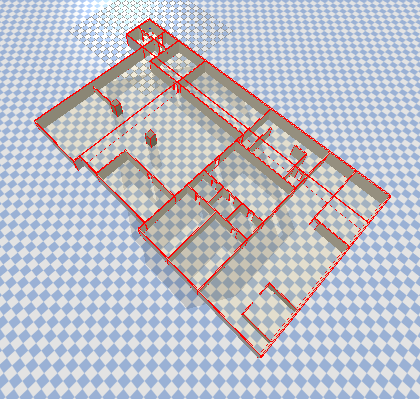

Autonomous Flight / Motion Planning
EMBER
Emergency Building Entry Robot: an autonomous indoor quadcopter concept for safer fire surveillance.

The office floor-plan simulation environment.
Overview
Traditional fire surveillance can require firefighters to enter burning or structurally unstable buildings to locate victims and assess how a fire is spreading. This places people at significant risk and can make gathering critical information slow.
EMBER, the Emergency Building Entry Robot, was a team project exploring how an autonomous quadcopter could navigate through a known indoor environment toward a target location. The system combined sampling-based global path planners with a local Model Predictive Controller to generate and track collision-free routes in simulation.
The team compared RRT, RRT*, RRT-Connect, and BIT* global planners using a Crazyflie 2.0 model in PyBullet. I implemented the local MPC solver, which tracked the planned route over a finite prediction horizon while accounting for the quadcopter's dynamics and operating constraints.
EMBER autonomously navigating a route using MPC.
Simulation Demo
This demonstration shows the MPC running in simulation as the quadcopter follows a route through the indoor environment. The green line represents the drone's executed trajectory, while the red points show the controller's finite prediction horizon.
The MPC repeatedly calculates a local control sequence, applies its first input, and then solves the optimization again using the updated state. This allows the quadcopter to continually correct its motion while following the global path.
Visual notice: The simulation recording contains brief flashing artifacts.